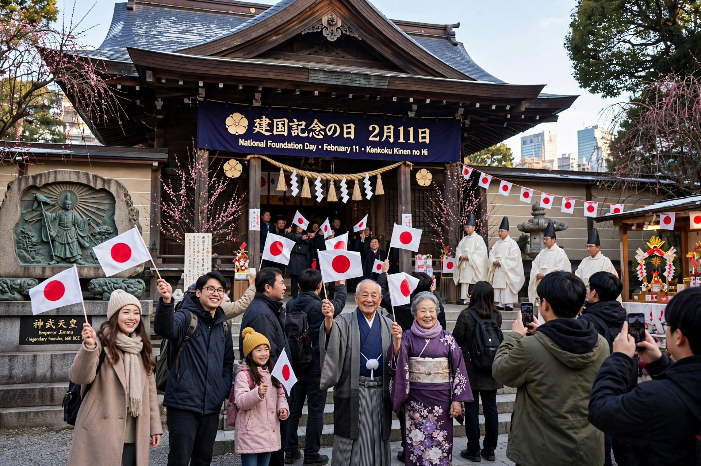

Japanese: 建国記念の日 (Kenkoku Kinen no Hi)
Date: 11 February
Type: National holiday
Significance: Legendary founding of Japan by Emperor Jimmu
National Foundation Day (建国記念の日, Kenkoku Kinen no Hi) is a public holiday in Japan celebrated annually on 11 February. It commemorates the legendary founding of the nation and the accession of its first emperor, Emperor Jimmu, traditionally dated to 660 BC in the chronicles Nihon Shoki and Kojiki.
The holiday derives from Kigensetsu (Empire Day), established in 1872 under the Meiji government and celebrated until 1948, when it was abolished under the Allied occupation for its association with emperor-centered nationalism. After years of debate, National Foundation Day was re-established in 1966 and first observed in 1967, with a deliberately vaguer name ("the day to commemorate the founding of the nation") reflecting the legendary rather than historical basis of the date.
The day is marked by flag displays and some parades and festivals at Shinto shrines, though observance is generally subdued compared with other national holidays. Each year the prime minister issues a commemorative statement.